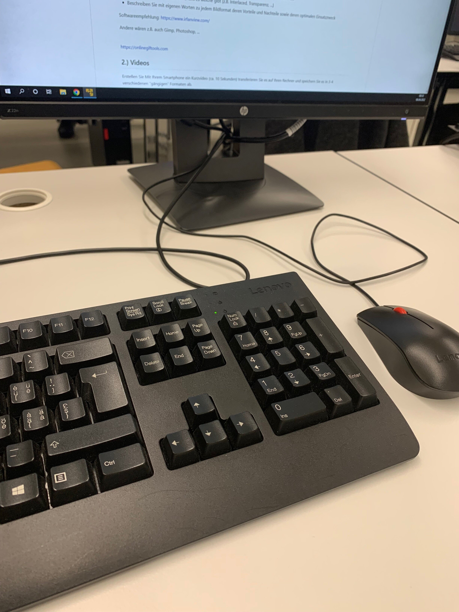

Fotos/Bilder
JPG
Dateigrösse: 913KB
JPG ist für eine grosse Farbbreite + Qualität und eine kleine Dateigrösse bekannt.
Die kleine Dateigrösse wird durch Informationenverlust erziehlt, deswegen muss bei JPG immer eine Qualität angegeben werden.
Wird oft im Internet eingesetzt, als ersatz dienen oft verlustfreie Dateiformate wie TIFF
+ Hohe Bildqualtität
+ Grosses Farbspektrum
- Verlustbasierte Kompression
- Unterstützt keine Animationen
Tastatur in Kassenzimmer BBZW-Sursee, von Fabian Müller
PNG-8
Dateigrösse: 1.05MB
PNG ist eine verlustfreies Dateiformat. Dabei wird mit einem Raster die Bildauflösung festgelegt.
Durch die verlustfreie Speichermethode sind PNG-Dateien grösser als vergleichbare JPGs.
+ Verlustfreie Kompression
+ Grosses Farbspektrum
- Grosse Dateigrösse
- Unterstützt keine Animationen

Steckdose in Kassenzimmer BBZW-Sursee, von Fabian Müller
GIF
Dateigrösse: 3.49MB
Ein GIF verknüft mehrere BITmap-Grafikdateien zu einem animierten Bild.
Da GIF somit eine Reihenfolge von Bildern ist, kann GIF nur 256 Farben darstellen und hat in der Regel eine niederige Auflösung.
Trotz der tiefen Auflösung und wenigen Farben hat ein GIF eine vergleichbar grosse Dateigrösse, da es sich genaugenommen um mehrere Bilder handelt.
+ Unterstützt Animationen
+ Für Kurzfilme kleine Dateigrösse
- Kleines Farbspektrum
- Kann nach erstellung nicht mehr editiert werden

Monitor in Kassenzimmer BBZW-Sursee, von Fabian Müller
Videos
MOV
Dateigrösse: 27.5MB
Das QuickTime video format wurde von Aplle entwickelt.
Es wird von Apple-Geräten, wie Macs und iPhones für Videodateien verwenden.
Die Datei ist so gross weil MOV kompressionen ohne Datenverlust verwendet.
+ Kann Video und Audio in einem Dateiformat speichern.
+ Hohe Videoqualität
- Grosse Dateigrösse
Pi-Schulung in Digilab Schindler, von Fabian Müller
MP4
Dateigrösse: 16MB
MPEG-4 Part 14 ist das im Internet am meissten verarbeitete Videoformat.
Dieser Container kann Video, Audio, Untertiner und Bilderdaten auf verschiedenen Ebenen speichern.
Die Dateien haben eine mittlere grösse, da sie nicht nur Videodaten speichern, jedoch diese im vergleich stark kompremieren.
+ Weit verbreitet
+ Erlaubt verschiedne Ebenen (Audio, Video) einfach zu verbinden
- Verlustbasierte Kompression
- Mittlere Dateigrösse
Pi-Schulung in Digilab Schindler, von Fabian Müller
WMV
Dateigrösse: 13.3MB
Das Windows Media Video ist ein Dateiformat von Michrosoft.
+ Kleine Dateigrösse
+ Verlustlose Kompression
- Nicht auf Linux und Apple verfügbar
- Wird nicht von Google Chrome unterstützt.
Pi-Schulung in Digilab Schindler, von Fabian Müller